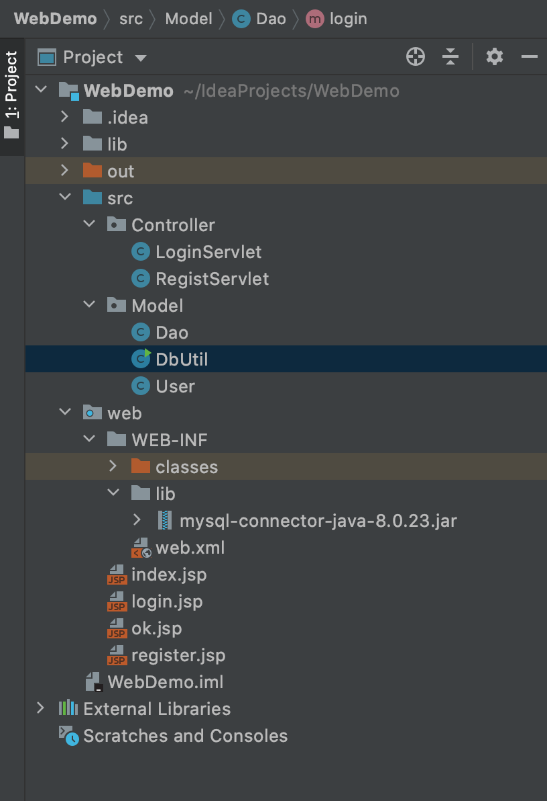
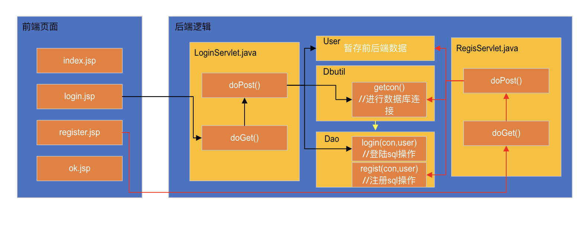

java+idea+servlet+jsp+mysql-最简单的登陆注册功能
Login-Regist
简单的登陆注册功能
基于mysql+servlet+jsp搭建的，遵循MVC的设计思路，Model用来写后台逻辑，View写前端，Controller写servlet，用于连接前后端。
代码链接github
1、文件目录介绍（由上到下）

src文件夹里面主要放后端的相关代码，包括两个部分：Controller和Model。
- Controller文件夹里面放的是LoginServlet.java和RegistServlet.java，分别处理登陆服务和注册服务
- Model文件夹代码介绍：Dao.java写的是数据库的具体操作，增删改查等。DbUti.java写的是与数据库连接的代码，包括参数设定等。User.java是前后端数据的暂存。
web文件夹是放的项目的配置和前端代码
- *.jsp：放的前端代码，index.jsp是创建项目的时候自动创建的，运行时首先打开的是这个页面，后面可以通过修改tomcat参数进行修改初始页面，修改的时候路径一定要搞对。login.jsp写的登陆的前端页面。ok.jsp放的登陆成功之后进入的页面。register.jsp写的是注册页面的代码
- web.xml：放的项目配置的代码，主要配置servlet。
2、代码整体逻辑

3、代码细节介绍
代码链接github
直接看代码注释即可，每行都有注释